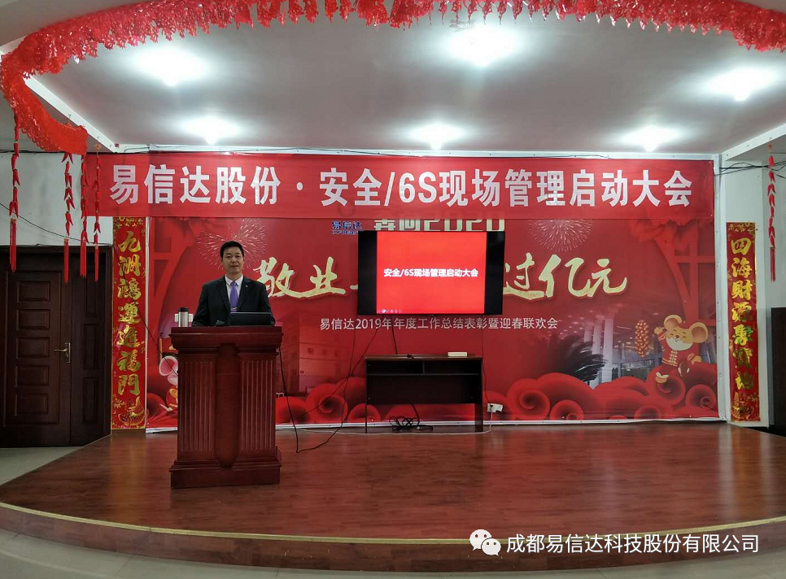

发布时间：2020/10/22 浏览次数：3961
2020年10月20日上午9时，成都易信达科技股份有限公司在庄严的国歌、司歌声中拉开了公司6S现场管理启动大会的序幕。
公司全体员工参与到此次6S管理活动中来，大会上，彭国宾董事长首先对执行6S管理表示大力支持，并提出公司成立19年以来存在的问题一直没能解决，目前6S管理体系的推进工作迫在眉睫，全体同仁应在总经理助理张建超的带领下，特别是部门主管应全力配合此次6S活动的执行。
安全/6S推行管理小组组长张建超同志，为全体员工宣讲了打造6S现场管理的多项好处，并表示有信心、有决心带领大家做好此次安全/6S现场管理。要求全体执行组成员全力配合。希望全体员工,尤其管理干部要谨记:多一些认真,少一点马虎;多一些理解,少一点抱怨;多一些主动,少一点拖拉;多一些真诚,少一点虚伪;多一些沟通,少一点误会;多一些担当,少点推诿;多一些包容,少一点分歧;多一些创新,少一点保守;把心胸放宽广,海纳百川。把所有的一切都向好处着想,没有最好, 只有更好。
在总干事张伟忠的带领下，各部门负责人郑重承诺和宣誓：我们将始终坚持以最好的态度，最强的执行力，从点滴做起，改善管理，提高产品质量，创建优良的工作环境，与部门、与公司共同进步。为实现好环境，好心情、高品质、高绩效，打造现代化管理标杆企业而奋斗不息！
作为6S推行小组组长，张建超同志用亲生经历为我们上了一堂别开生面的培训课，6S管理不是一句话，理想是丰满的，现实是骨感的，我们内心很忐忑，很迷茫，不知从何做起。在培训中， 张总助为我们解疑答惑，传授经验。
下午13:00全体管理小组成员前往中粮集团成都粮油工业有限公司，银隆新能源汽车公司参观学习，为打造6S取经。
千里之行始于足下，推广6S任重而道远，我们将以一种锲而不舍的精神，一种坚持到底的信念，一种脚踏实地的务实态度，一种自发的责任心，将6S进行到底。既已扬帆起航，让我们共同期待一个赞新的未来！